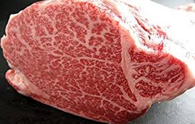
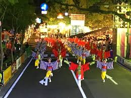

Top 6 Interesting things
Manga&Anime
Movie
Music
Travel
Culture
Education
Blog
Q&A
All Posts in Culture Section

Top 6 Expensive Japanese Food

Top 6 Festivals
Top 6 Monsters Appeared in Japanese Culture